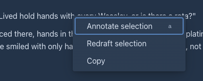
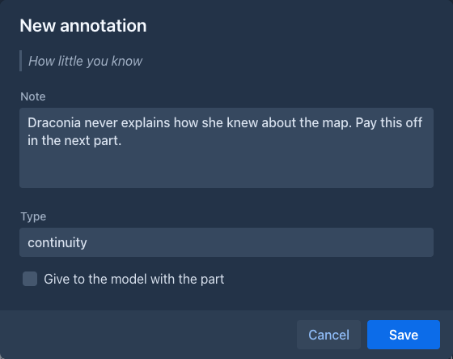
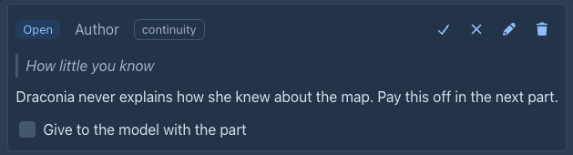
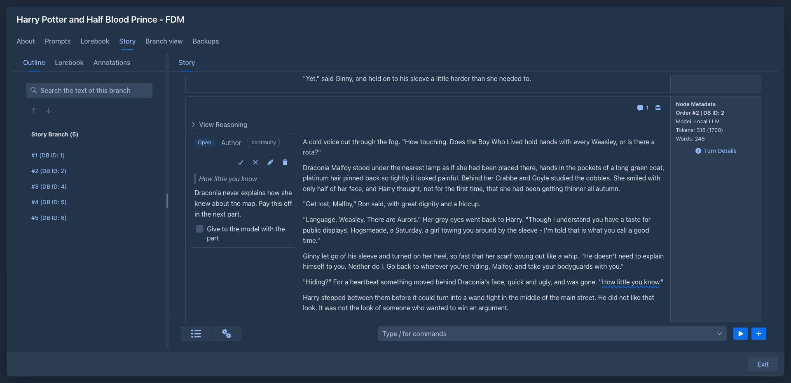
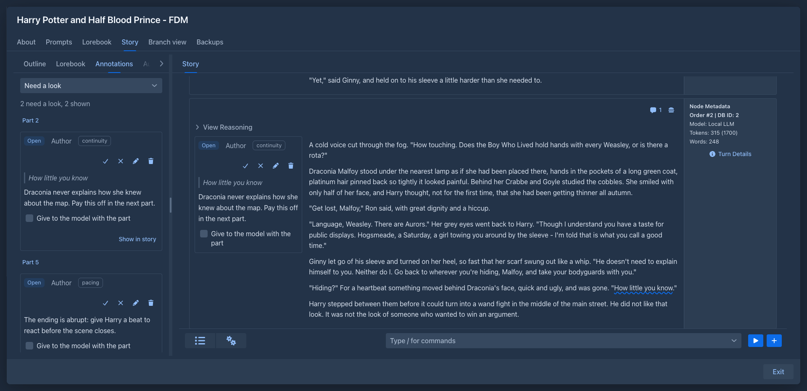
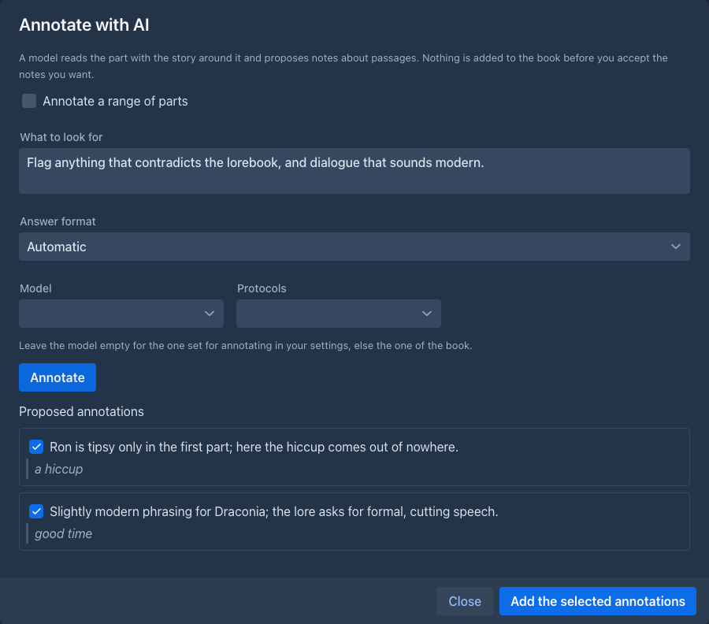
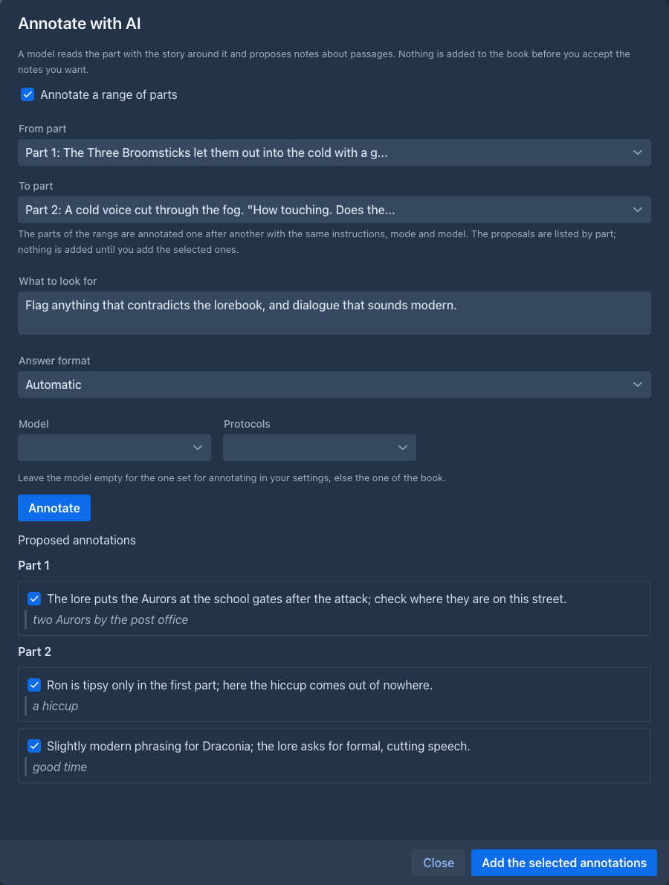
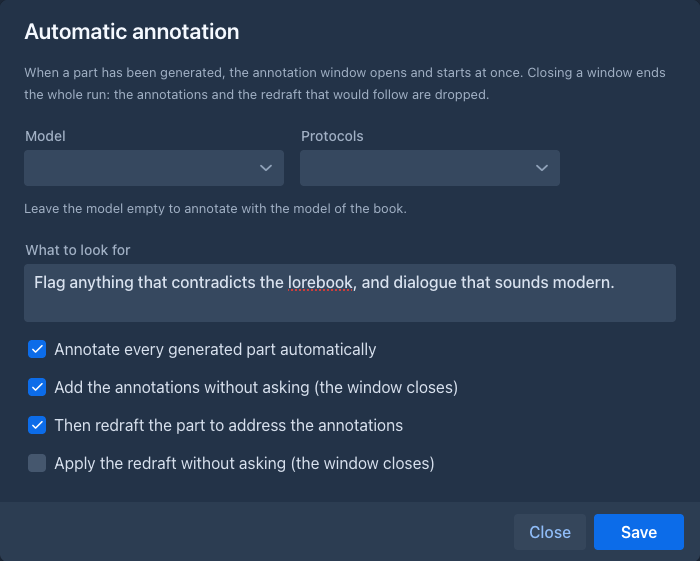

Annotations
An annotation is a note for you about a passage of a part: weak scene, timeline is wrong, revisit. It works like a comment in a word processor: the text of the story stays clean, the passage is only marked, and the note lives next to it. Notes can also come from a model or from an extension that checks the story.
An annotation is for the author. It is not sent to the model unless you say so for that note, see
What an annotation is
A part can have any number of annotations, also on overlapping passages.
Making an annotation
On a passage. Select the words in the text of the part (they can have formatting, the selection does not have to be
exact), then right click it (a long press on a phone) and choose Annotate selection, or press its key (a). The window shows the passage; write the note, an
optional type, and whether the model gets the note, and Save. The menu (☰) of the part has no such item: opening it takes the selection away. The right click menu has Annotate selection, Redraft selection and Copy, and replaces
the one of the browser on the text of a part, so it has Copy too. While the part is being edited, the selection in the
editor is used: the edit is saved first.
On the whole part. Choose Annotate part in the menu of the part.
With a model. Choose Annotate with AI, see
From the command line (and for extensions): /create-annotation.


Reading the annotations
A passage with an open note is underlined with a wavy line, coloured by who wrote the note (blue you, orange a model, green an agent, red an extension). A note inside another one is underlined lower, so both can be seen.

-
Click the underlined text to see the notes that cover that point (all of them where passages overlap). They open next to the text; on a phone tap the passage.
-
A speech bubble with a number in the header of a part counts the notes of the part that need a look. Click it to see them all, also the ones about the whole part and the ones that lost their passage.
-
In the margin (the cogs menu of the story, Annotations in the margin; desktop only, and remembered for you) the notes of every part stand in a column left of its text, in the order of their passages, instead of in the popover. The note under the pointer and its underlined passage light up together, and a click on a passage brings its note into view. The notes are the same ones (resolve, edit...); resolved and dismissed notes are not shown there, as they are not underlined.
-
The Annotations tab lists the notes of the whole book, grouped by part in the order of the story, with a filter (Need a look, Closed, All). Show in story (or the number of the part) takes you to the part.


Each note shows who wrote it, its type, its status, the passage, the note and these actions:
Annotations follow the text
You do not have to care where a note is when you edit. Marginalia keeps the passage of each note with the words it was about:
- text added or removed before the passage moves it;
- an edit inside the passage makes it longer or shorter;
- words you type right at the start or end of the passage are outside of it;
- fixing a typo in a one word passage keeps the note on that word.
When the passage is deleted or rewritten so that it can't be found, the note becomes Orphaned. It is kept: attach it to another passage (Attach to selection), dismiss it, or delete it. If you bring the words back (undo), the note finds its passage again.
When a part is generated again the text is new, so the notes find their passages again by the words they quoted; the ones whose words are gone are orphaned. When two parts are merged, the notes of the later one move to the merged part. A branch of a part copies its notes. Notes are part of backups, copies of a book and exports of a backup.
Letting a model annotate
Annotate with AI in the menu of a part asks a model to review it. You say what to look for (flag continuity errors, weak dialogue, contradicts the lore; empty uses the task of the prompt), choose the model, and Annotate.
The model reads the part like the redraft does: the part, the story before it (older story as summaries), as much of the story after it as fits, the lore and the style of the book, and the notes the part already has so it does not repeat them. It never gives positions: it quotes the passage, and Marginalia finds the quote in the text. A quote that is not found is not lost: the note is proposed as a note about the whole part, marked not found in the text.
Nothing is added to the book until you accept. The notes the model proposes are listed with a check box each (all checked); uncheck the ones you do not want and choose Add the selected annotations.

A range of parts (batch). Annotate with AI in the menu of a part reviews that part only. To review several, open the settings menu (⚙) of the story and choose Annotate a range of parts with AI (on a phone too). It is the same window with From part and To part to choose (both are required, Annotate waits for them; it does not matter which is the earlier; only parts with a text are listed). Annotate then reviews the parts of the range one after another, with the same instructions, answer format and model, each read with the story around it like a single part. The proposals are listed under the number of their part, all checked, and Add the selected annotations adds each to its own part. Stop stops the part in progress and starts no more; what was found until then stays in the list. A part whose answer can't be read or that does not fit the context of the model is skipped (the window says which) and the run goes on; a failure of the model ends the run. Every part is a request to the model, so a long range costs as many requests (and tokens).

If an answer can't be read, Marginalia asks once more; if it still can't be read, the model's answer is shown so the work is not lost. The prompt is the annotate prompt.
Annotating every new part automatically
The settings menu (⚙) of the story has Automatic annotation (on a phone too; a check mark shows that it is on). It makes the book review each part right after it was generated, and optionally redraft it. The settings are stored with the book:
The automatic redraft window has two tabs: Redrafted text (the text as the model writes it, its reasoning and the differences against the part) and Original text with annotations (the part as it was, with the passages of the open notes marked as in the story, and the notes under it; click a mark to jump to its note, or point at either to light up both). Look at the original to see what the model was asked to deal with, and stop the redraft or close the window if it is not going the way you want; the part keeps its text.

Closing a window ends the whole run. If you close or stop the annotation window, nothing is added and no redraft follows; if you close the redraft window, the part keeps its text. A model that finds nothing closes its window (with a message) and nothing follows, since there is nothing to redraft. A window that stays open (no automatic add, an answer that could not be read, a stopped run) waits for you; closing it ends the run.
Every generated part costs at least one more request to the model (two with the redraft). If you generate with a local server that keeps only one prompt in its cache, the review replaces the story in it and the next generation has to read the story again: choose another Model for the review, or a second server.
Giving a note to the model
Check Give to the model with the part on a note and it becomes a note to the model too: the notes of the parts that are
in the prompt go into the master template as {{annotations}} (the built-in template has a block Author's notes on the
story; a template of your own has to use the variable). Only open notes with this check are given, and only for the
parts that fit into the prompt. Use it for what the model should keep in mind while it continues (this character is hiding
the letter), not for editing remarks.
Redrafting to address the notes
When a part has open notes, the redraft window has a check box Deal with the open annotations of the part. Checked, the model gets the notes (the passage and the note) together with your instructions and rewrites the part to deal with them; when you Apply the redraft, those notes are marked resolved. In the redraft of a selection only the notes whose passage overlaps the selection are given.
Commands
/list-annotations, /get-annotation, /create-annotation, /update-annotation,
/resolve-annotation, /reattach-annotation and /delete-annotation work with the notes from the command line.
Extensions can use the same commands. /generate-annotation <part> is Annotate with AI as a command: the model reviews the part with the model of the book
(an agent uses its own model when Write the book with the model of the agent is on; profile picks another model profile of the agent), with the instructions, answer format and prompt of the book, and every note it finds is added at once,
since there is nobody to pick them. It is one request to the model, so it runs alone and costs tokens.
Annotations and agents
An agent reads and writes annotations with the same commands: it can annotate a whole book (continuity, style...), resolve notes it dealt with, edit or delete them. It works on a copy of the book, so nothing reaches your notes until you review the result:
-
A note the agent made is a line Annotation - Added, one it resolved, dismissed or rewrote is Changed (with the note, type, status and give to the model as the fields, each with its own Take this change box), one it deleted is Deleted. The notes of a part the agent deleted go with the part and have no lines.
-
The line says in which part the note is (
3:and the start of the note); Show in the copy opens the part in the agent's copy. A note on a part the agent wrote needs that part: ticking the note ticks the part too. -
Only annotations above the list ticks the notes alone. The passage of a taken note is the same one when the text of the part is the same; when you take the agent's new text of the part, or your own text differs, the note finds its words again in the text of your book and, when it can't, becomes a note about the whole part.
-
A note you wrote while the agent was paused comes into its copy when it resumes (and a note you resolved is resolved there), so it knows about it; a note you and the agent both changed is a conflict like any other.